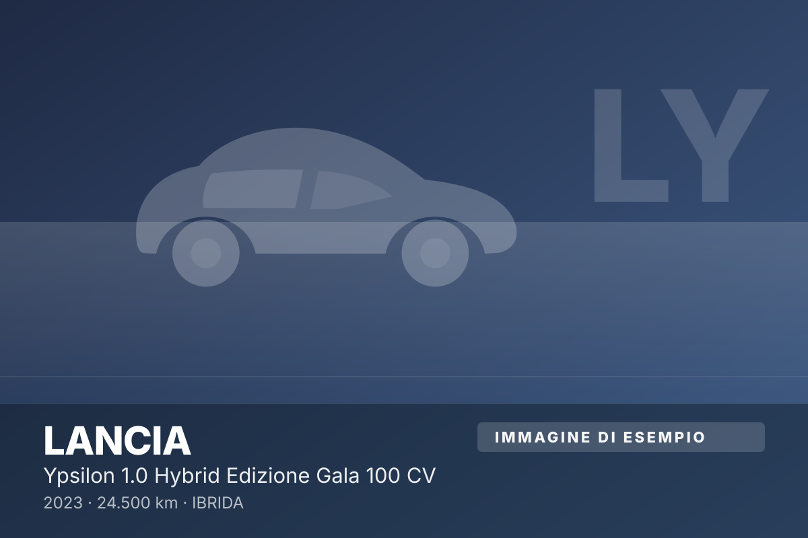
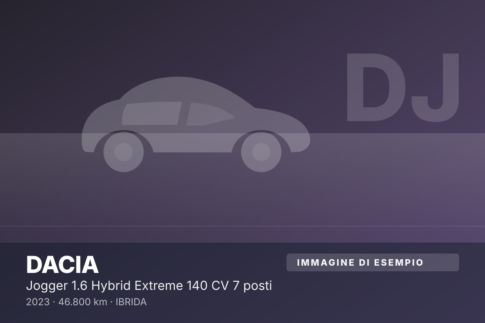
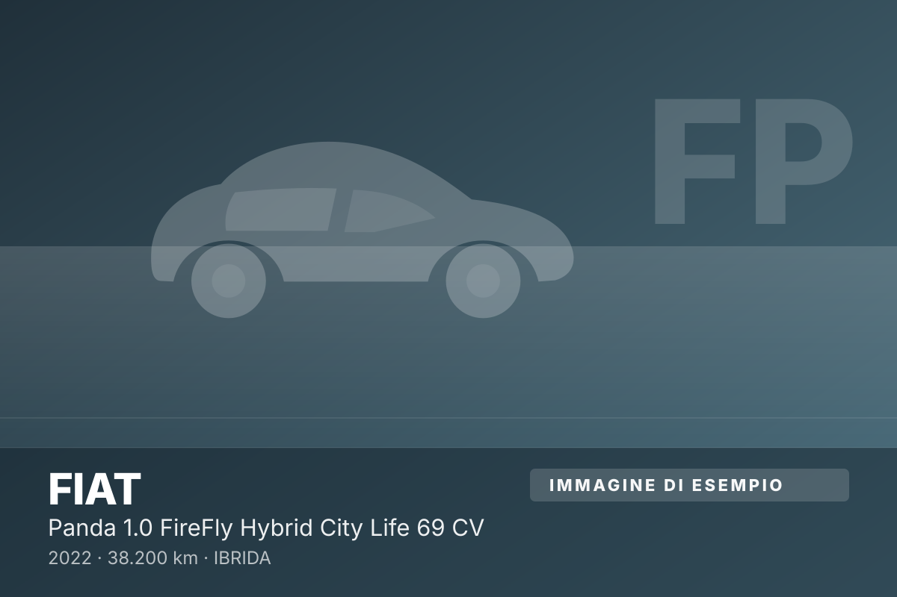
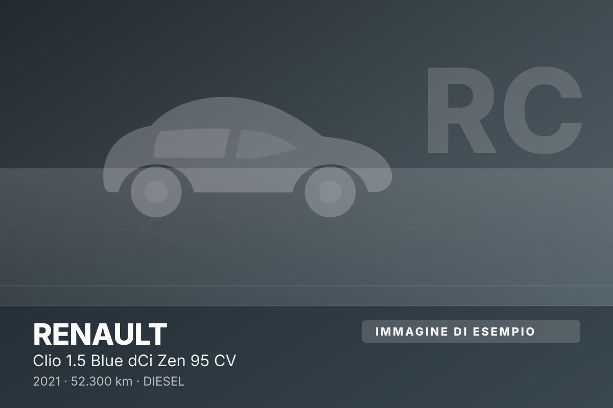
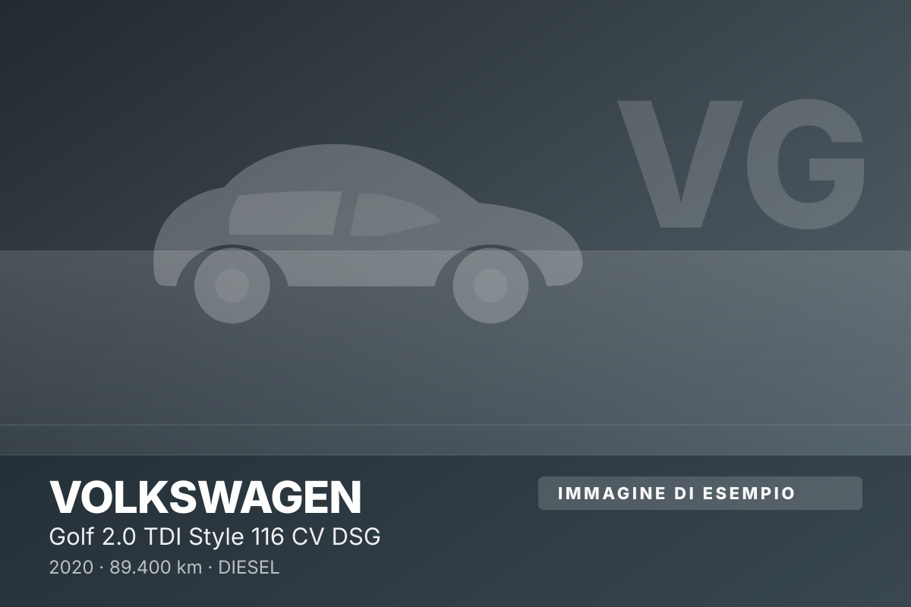
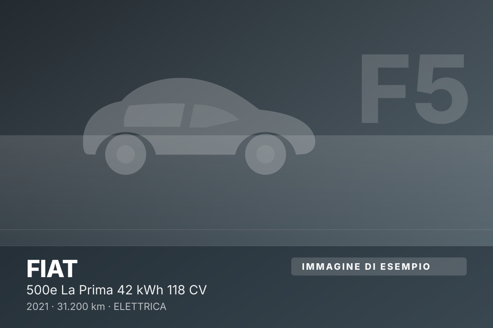
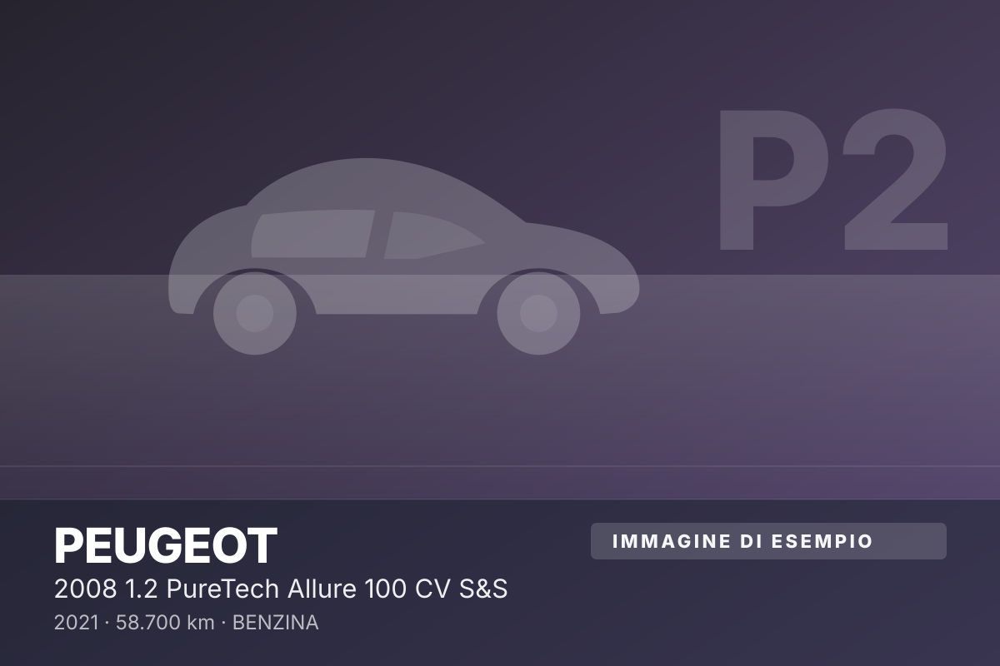
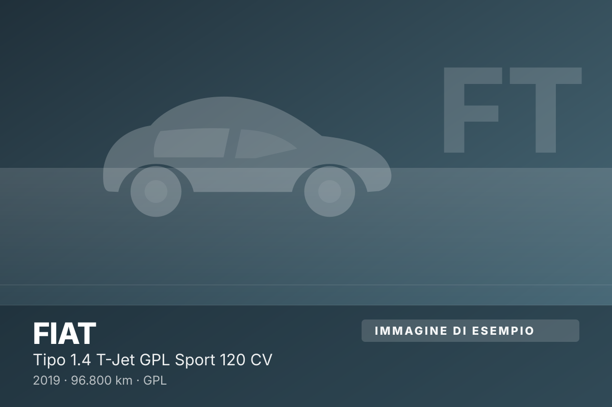
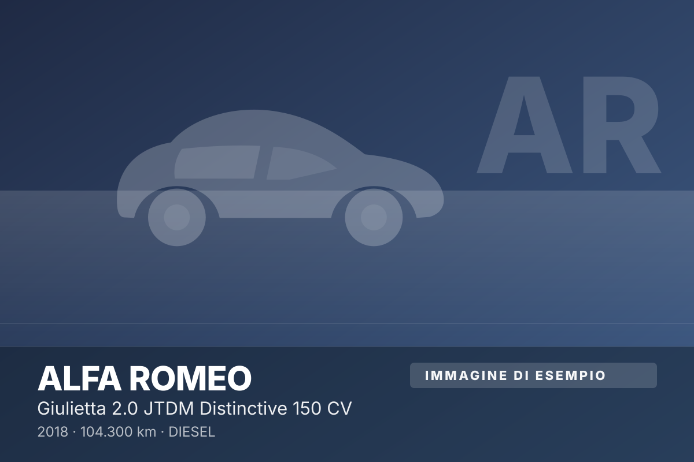

DisponibilePrezzo veroIn evidenza
Toyota Yaris
1.5 Hybrid Trend 116 CV
202241.100 kmIbridaCambio automatico
Nuovo: 24.150 €
17.500 €
da 259 €/mese
× 60 mesi
× 60 mesi
10 vetture disponibili su 12 in catalogo, tutte con garanzia e chilometraggio certificato. Usa i filtri: la lista si aggiorna subito, senza ricaricare la pagina.
1.5 Hybrid Trend 116 CV
1.0 EcoBoost Hybrid ST-Line X 155 CV
1.6 MJT Cargo Lavoro 105 CV

1.0 Hybrid Edizione Gala 100 CV

1.6 Hybrid Extreme 140 CV 7 posti

1.0 FireFly Hybrid City Life 69 CV

1.5 Blue dCi Zen 95 CV

2.0 TDI Style 116 CV DSG

La Prima 42 kWh 118 CV

1.2 PureTech Allure 100 CV S&S

1.4 T-Jet GPL Sport 120 CV

2.0 JTDM Distinctive 150 CV
Il magazzino cambia ogni settimana e non pubblichiamo tutto subito: dicci cosa cerchi e la troviamo noi.
Le foto sono segnaposto? Nelle schede con "immagine di esempio" la fotografia della vettura è in arrivo: in salone l'auto la vedi davvero, e su richiesta mandiamo video e altre foto su WhatsApp.
Catalogo generato il 11 novembre 2026 alle ore 17:26 — prezzi e disponibilità possono cambiare nelle ore successive: telefona prima di passare.
Ogni settimana entrano vetture che restano in salone pochi giorni. Dicci marca, budget e uso previsto: se l'abbiamo in salone, te la segnaliamo prima che la veda qualcun altro.